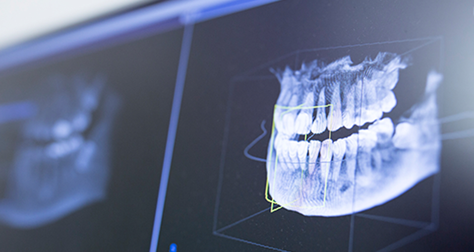
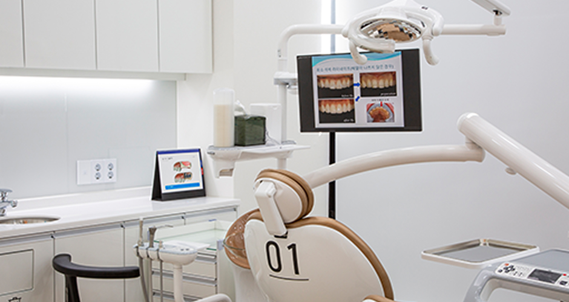
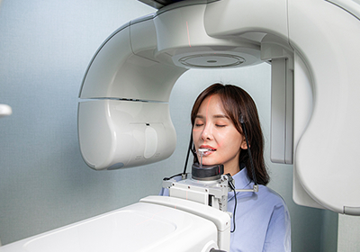
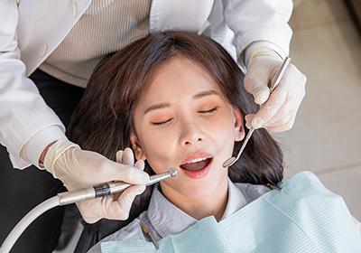
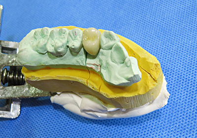
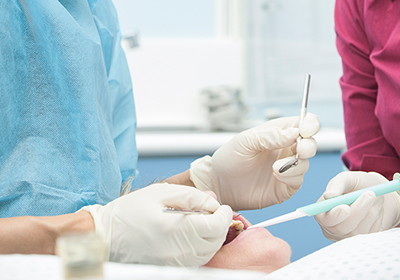
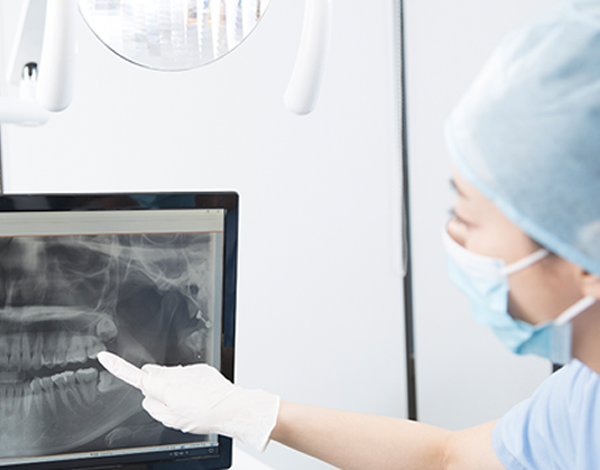

정밀검진
디지털 의료장비를
활용한 스캔과
정밀검진
여러 번 올 필요 없이 하루 만에 끝내는 보철 치료
<%=m_client_en%>
여러 번 올 필요 없이, 하루 만에 끝!
최첨단 3D 스캔 방식으로 치아를 스캔하고, 보철물을 디자인하여 치아에 신속하게 적용하는 방식입니다..
임시치아 치료 후 재방문하여 진료를 받는 번거로움이 없습니다.

제로치과병원은 자체 디지털기공소를 보유하고 있습니다.
첨단 디지털 장비와 기술력으로 오로지 제로치과병원의 기공물만을 전담하여 보다 정확하고 빠르게 제작이 가능합니다..
상담부터 수술, 보철 관리까지 1:1 환자 맞춤형 서비스를 제공합니다.


디지털 의료장비를
활용한 스캔과
정밀검진

개개인에게 최적화된
충치치료 및
치아 다듬기

자체 기공소에서
자연치아와 유사한
보철물 제작

임시 치료 없이
보철물 장착 및 조정
당일 보철물 제작이 가능하기에 임플란트 치료 과정에서
임시치아 장착으로 생길 수 있는 변형과 감염 위험성을 줄여줄 수 있습니다.
또한 외부기공소로 보내지 않고 제로치과병원 내부
자체 디지털 기공소에서 보철물을 제작하기에
치료 시간과 내원 횟수가 감소합니다.

바쁜 일상으로
내원 스케줄 확보가
어려운 경우
일과 시간이 정해진
직장인 및
해외거주자의 경우
신속한 치료를
원하시는 경우
다수의 보철물을
제작 후
적용하는 경우
심미적으로 우수한
보철 치료를
원하는 경우